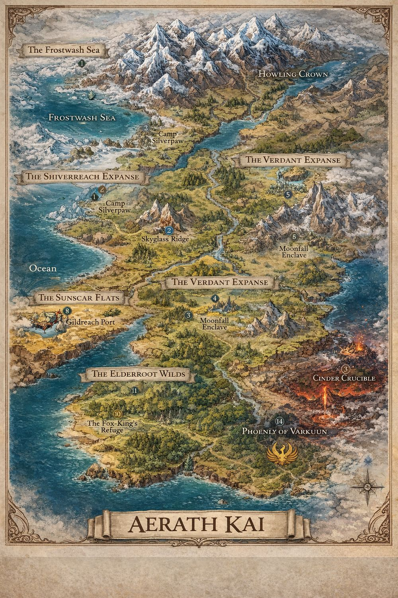

The continent of Aerath Kai
One long landmass with an ocean on its western shore, ice at its crown, and fire at its foot. The Hollow press south out of the Howling Crown. Everything below the Verdant Expanse still thinks of that as somebody else's problem.

The line
The war is fought at Camp Silverpaw, the last fixed position before the ice. Everyone who goes north goes through it. Not everyone comes back through it as themselves.
The money
Gold is common. Coins of the Ancient are not — they buy things gold cannot, and only certain people will take them. The party has ten each.
The rumour
Southern towns argue about whether the heroes holding the north were ever real. The cults have three answers, and at least one of them is right.
The party
Three brothers pulled out of one world and dropped into this one, plus the friend who landed with them. Each carries a crystal, and the crystal decides which of the nine aether paths is open to them.
Party gap
Luca is brilliant and physically fragile. Declan is medium at everything. Jase is a twelve-year-old who can kill things but cannot take a hit. Nobody in the original three can stand in front. That is the whole reason the fourth character exists.
The nine aether paths
Each crystal opens one path, and each path is a ladder of ten forms. You start at the bottom rung and you do not skip. Tap a crystal to read its ladder.
Leveling up
Two things grow, and they grow separately. Essence tier is how much you can hold. Path rung is what you can do with it. You climb rungs by earning them in play; you climb tiers by breaking through something in yourself.
Which rungs your tier unlocks
A body that can't hold the essence can't hold the form. You never skip a rung, and you can't reach past your tier no matter how well you played.
Climbing a rung: the three proofs
No experience points. A rung is earned when a character has proved three things about the form they already have. Any order, across any number of sessions. The DM decides when one lands, and says so out loud at the table.
Proof I
Use
Solve something with your form that it was obviously not designed for. Not the intended use — the clever one. A Bloomcaller who grows a rope. A Blink Assassin who blinks a falling child instead of themselves.
Proof II
Cost
Pay something real for it, and mean it. Essence to empty, a wound that stays, a promise you now have to keep, a thing you wanted and gave up. If it didn't hurt, it wasn't the proof.
Proof III
Understanding
Explain your own power to someone who doesn't have it — a party member, an NPC, or Andrew when he asks. The player has to actually say it. If they can't, they haven't got it yet.
The ascension
When the third proof lands, don't advance them mid-fight. Advance them at the top of the next session, out loud, with the new form named. Give it thirty seconds of ceremony. Then hand them one signature ability and one new limitation from the description, and let them find the rest in play.
Climbing a tier: the breakthrough
Tiers are rarer and cost more. Three conditions, all required, no exceptions and no partial credit.
- The essence threshold
They have to be at the top of their current tier. This is the easy part and the only part that is just a number.
- The bottleneck
Every character has one thing standing between them and the next tier, and it is never a monster. Luca's is that he'd rather be right than be helped. Declan's is that he looks away. Jase's is that he thinks he's expendable. Theo's is that he thinks the oath only runs one direction. Name each kid's bottleneck privately, early, and make them meet it.
- The surrender
Something has to be given up on the way through — a weapon, an ally's good opinion, a version of themselves. Ask the player to choose it. Never choose it for them.
Failed breakthroughs
A character can attempt a breakthrough and fail. They don't lose the tier they have — they lose the attempt, and they can't try again until something has genuinely changed. Failed breakthroughs are the best story beats in the whole system. Let them happen.
Essence thresholds
What each tier holds, and what changes on the way up.
Pacing, for the DM
How fast
- Rungs 1–2 — two or three sessions each. Give these away fairly easily; they're learning the system.
- Rungs 3–6 — four to six sessions each. This is the middle of the campaign and where most of it lives.
- Rungs 7–10 — an arc each. These should feel like they cost a year of someone's life.
- Tiers — roughly one per act. Four tier jumps is a whole campaign.
Keeping four kids level
- Track proofs per character, not per party. They will drift, and that's fine.
- If someone falls two rungs behind, hand them a session where only their form works.
- Never advance someone as a consolation prize. It cheapens the three who earned it.
- Andrew can tell a player which proof they're missing. He will not tell them how to get it.
- A quiet player who never announces anything is usually sitting on Proof I already. Notice it for them.
Uncle Andrew & the Crossroads
Taken to this world long before the boys were. Every attempt he made to stop cultivating or go home only made him stronger, until he had lived thousands of years and stopped counting. Not a god. Close enough that people treat him like one.
The Crossroads Tavern
A pub that can appear inside any tavern in the world. Walk through the right doorway and he is there with a glowing drink, surrounded by gods, demigods, and things older than history — all of whom keep to three rules.
It is the safest place in existence, and he is the reason it stays that way.
Say his name
You are linked to Andrew through aether resonance. Say "Andrew" out loud and ask a question, and he hears it instantly, wherever you are.
- Teaches forbidden techniques
- Warns you about what's ahead
- Explains mysteries and reads creatures
- Opens pathways other cultivators cannot see
He will not fight for you, and he will not break the world's rules. He gives you the next question, never the whole answer.
The God of Luck drinks here
Every roll is his
Andrew's drinking partner personally decides each die. A good roll means he's pleased. A bad roll means he's amused. A critical failure means he spilled his drink.
Roll and find out what kind of mood he's in.
The Hollow
They do not kill people. They subtract them. Tap a gap below to see what was taken out of it.
The man came back from the ice with all his fingers and all his teeth and none of his daughter. He remembers the walk. He remembers the cold. He does not remember why the small boots by the door make him cry, and he has stopped asking, because the asking is also going.
What they take
A name. A reflection. A skill. A person you loved. Whatever is removed leaves a hole shaped exactly like itself, and the hole keeps widening.
How you spot one
Shadows that arrive late. Animals that will not cross a field. A voice echoing back out of a well that is not the voice that went in. Declan's insight discipline is built for exactly this.
How you fight one
You cannot cut absence. You have to put something back — say the taken name out loud, return the object, name what is missing. Light and Heart do this natively. Everyone else improvises.
The question under the campaign
The Hollow are already south of the line. Either the heroes are quietly losing, or the heroes stopped existing a long time ago and something has been holding the north in their name ever since. Both answers are worse than the rumour.
DM screen
Everything below is for the person running the game. Anyone with the link can read the log, so keep real secrets off it.
Read this aloud to start
The Hollow came out of the north so long ago that the war has outlived the people who started it. The heroes who hold the line have been fighting for generations — long enough that in the southern towns, children argue about whether they were ever real at all. Some cults say the heroes died centuries ago and the north is quiet now. Some say the heroes became the Hollow. And in a tavern that is every tavern, an immortal named Andrew sets down his drink, because he just heard someone say his name.
Session one
- Open far from the war
Market day in a mid-size town in the Verdant Expanse. A hero-cult preaching in the square. A shrine to a hero nobody can name anymore. The north is a rumour here.
- Something small and wrong
Livestock that won't cross a field. A man whose shadow lands a half-second late. Let the players find it themselves — do not have an NPC announce it.
- Let them use Andrew
First time they say his name, answer generously. You want them addicted to the mechanic, because it's your steering wheel for the rest of the campaign.
- End on the reveal
Whatever's wrong in this town is Hollow work, hundreds of miles south of where that should be possible. Close the session there.
Running Andrew well
- Always answers. Always truthful.
- Gives the next question, not the answer.
- Never rolls dice, never fights.
- When you need to redirect a stuck table, he "remembers something."
- If he sounds worried, the players should be terrified.
Threads you already have
- Jase's crew — Pirate Ron, unexplained, waiting to be used
- Jase's fifteen unknown mushrooms
- The Fox-King's Refuge, and whatever a Fox-King is
- Thomas' Guide to Happy Hours Across the Land — the in-world index of every tavern Andrew's door might open into
- Declan's "necromancy staff (future)" — the weapon he hasn't earned yet
Campaign log
Loading…